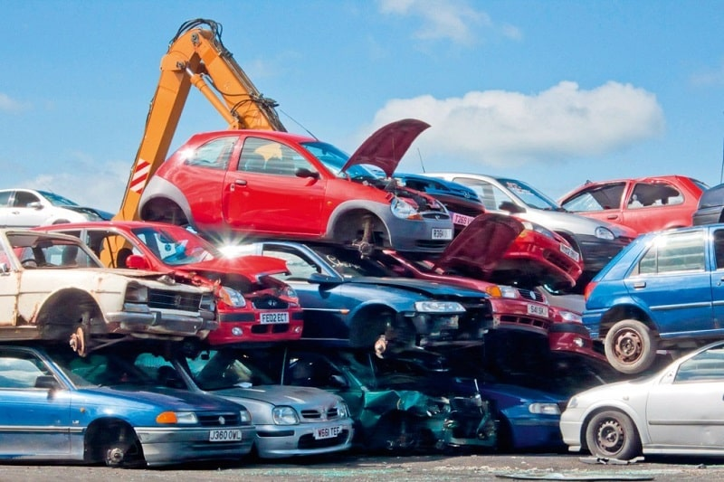

We are a reputed auto recyclers and cars and truck elimination firm based in Perth. JBM Vehicle Wreckers Private Ltd (additionally trading as Automobile Removals) is a reputed Perth based Car Dismantlers and scrap recyclers. We are always readily available at your solution, so give us a call if you are sick of your old auto.
Vehicle wreckers Perth crew will gladly acquire that automobile off you, irrespective of its condition. We likewise sell top quality made use of vehicle parts at an exceptionally budget-friendly rate.
So are you seeking the very best Wreckers? Contact us!

We acquire every little thing from Cars, Vans, and Heavy business cars to light commercials.
Is your lorry obtained harmed or met a mishap? Do not worry! We get all the automobiles in any problem including:
Irrespective of the make, as well as designs, Perth Wreckers, acquire all significant brands consisting of Holden, Chrysler, Subaru, Toyota, Volvo, Fiat, Land Wanderer, Honda, BMW, Mazda, Ford, Volkswagen, Nissan, Hyundai, Mercedes Benz, Fuso, Suzuki, Mitsubishi, Kia, Peugeot, Hino, as well as Jeep and so on.
We are part of the Classic, Korean, European, American, and Japanese Wrecker Perth services.
As a premier motor wrecker in South Australia, we possess a big car parts inventory of all substantial make and versions. We also have a massive Scrapyard in Perth.
All the supply's extra car components are wholly evaluated and allowed by professional auto mechanics and vehicle experts.
Give us a call for any vehicle components questions.
We look after our setting as the Group at JBM Cars and truck Removals are eager concerning maintaining a protected environment. Our vehicle recyclers are:
The most preferred Auto Dismantlers in Perth is a phone call away. Give us a call or fill the quote form on our site. One of our scrapyard team members will undoubtedly assist you within one day or earlier.
Suppose you are asking about the junkyard near me that offer any vehicle elimination services in South Australia. After that, please have your unwanted vehicle's details ready, like enrollment plate number. So we will able to bring your vehicle's assessment on the board.
On the other hand-- if you are asking about the used automobile parts. After that, please offer us your car's engine chassis number or enrollment plate number. So we ought to be able to provide you the exact quote for the wanted auto spare component. Get in touch with Automobile Wreckers currently.
Address:103 Sheffield Rd, Welshpool WA 6106
Phone: (08) 9358 1392